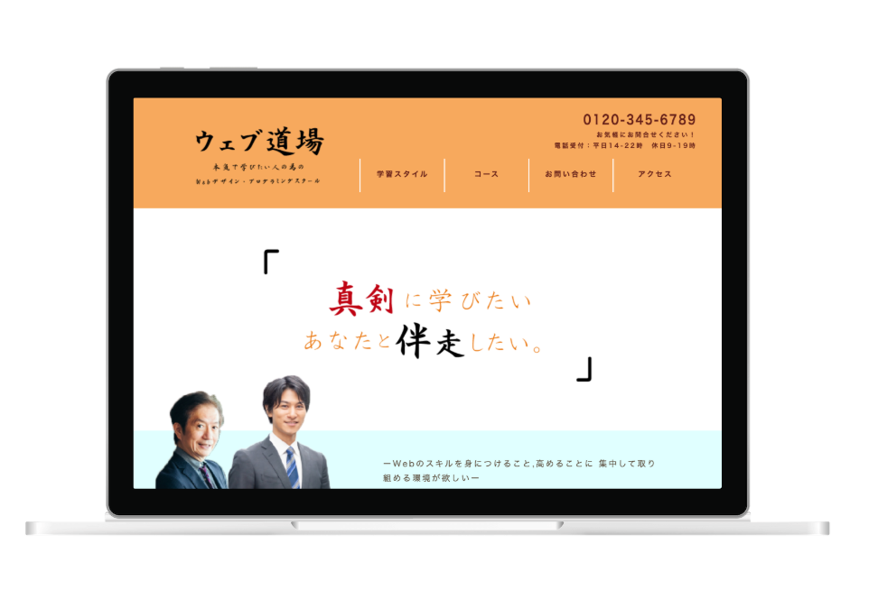

<!DOCTYPE html>
<html lang="ja">
<head>
    <meta charset="UTF-8">
    <meta http-equiv="X-UA-Compatible" content="IE=edge">
    <meta name="viewport" content="width=device-width, initial-scale=1.0">
    <title>Chihiro's Portfolio</title>
    <link rel="shortcut icon" href="img/C-icon.svg" type="image/svg+xml">
    <link rel="preconnect" href="https://fonts.googleapis.com">
<link rel="preconnect" href="https://fonts.gstatic.com" crossorigin>
<link href="https://fonts.googleapis.com/css2?family=Inconsolata:wght@500&family=Noto+Sans+JP:wght@100&family=Poppins:wght@100;200&family=Shippori+Mincho&display=swap" rel="stylesheet">
<link rel="stylesheet" href="portfolio.css">
</head>
<body id="webdojo" class="portfolio-body portfolio-webdesign-body">
    <header>
        <div class="nav-wrapper">
            <nav class="header-nav">
                <ul class="nav-list">
                    <li class="nav-item"><a href="index.html#index">Top</a></li>
                    <li class="nav-item"><a href="index.html#profile">Profile</a></li>
                    <li class="nav-item"><a href="index.html#skill">Skill</a></li>
                    <li class="nav-item"><a href="index.html#work">Work</a></li>
                </ul>
            </nav>
        </div>
        <!--ハンバーガーメニュー-->
        <div class="bar_nav-wrapper">
            <nav class="bar_header-nav">
                <ul class="bar_nav-list">
                    <li class="bar_nav-item"><a href="index.html">Home</a></li>
                    <li class="bar_nav-item"><a href="index.html#profile">Profile</a></li>
                    <li class="bar_nav-item"><a href="index.html#skill">Skill</a></li>
                    <li class="bar_nav-item">
                        <a class="bar_nav-item-work-parent" href="index.html#work">Work</a>
                        <dl>
                            <dt><a class="bar_nav-item-work-child" href="index.html#webdesign">- Web Design -</a></dt>
                                <dd ><a class="bar_nav-item-work-child-child" href="portfolio-webdojo.html">Web school site</a></dd>
                                <dd ><a class="bar_nav-item-work-child-child" href="portfolio-portfoliosite.html">portfolio site</a></dd>
                                <dd ><a class="bar_nav-item-work-child-child" href="tatamistore.html">Tatami store site</a></dd>
                        
                        <dt><a class="bar_nav-item-work-child" href="index.html#graphicdesign">- Graphic Design -</a></dt>
                        <dd><a class="bar_nav-item-work-child-child" href="portfolio-businesscard.html">Businesscard</a></dd>
                        <dd><a class="bar_nav-item-work-child-child" href="portfolio-postcard.html">Postcard</a></dd>
                        <dd><a class="bar_nav-item-work-child-child" href="portfolio-package.html">Package</a></dd>
                        <dd><a class="bar_nav-item-work-child-child" href="portfolio-flyer.html">Flyer</a></dd>
                    </dl>
                    </li>
                
        </div>
            <!--  /ナビ表示時 ナビの外をクリックしたら閉じるようにする用 -->
            <span class="nav_bg"></span>
        <div class="burger-wrapper">
            <div class="burger-btn">
                <span class="bars">
                    <span class="bar bar-top"></span>
                    <span class="bar bar-mid"></span>
                    <span class="bar bar-bottom"></span>
                </span>
            </div>
        </div>
        </header>
    <main>
        <h2 class="category">Web design</h2>
        <h3>Webスクールのサイト</h3>
        <p class="main-image main-image-webdojo">
            
            
        </p>
        <a href="http://chihiro052.html.xdomain.jp/Webdojo/" target="_blank"><p class="link-site-before-content">サイトを見る</p></a>
        <div class="portfolio-content-wrapper">
            <p class="intro-sentence">
                Webプログラミング・デザインを勉強したい方向けの
                架空のスクールのサイトを企画・制作しました。
            </p>
                <div class="portfolio-content">
                    <h4>ターゲット</h4>
                        <p>
                            30歳前後の転業種目的でWebのプログラミングやデザインのスキルをにつけたいと真剣に考えている方
                        </p>

                    <h4>目的</h4>
                        <p>当スクールの強み（授業や講師の質の良さ）を知ってもらい、新規顧客獲得に繋げる</p>
                        <p>自信を持って転職できるような、高いスキルをつけたいという真剣な気持ちに責任をもって応えるスタッフがおり、学べる場が用意されていることをターゲット層に力強く伝えることで、信頼を得る。</p>

                    <h4>制作ポイント</h4>
                        <h5>メインビジュアル</h5>
                            <p>メインビジュアルを毛筆のフォントを用いたキャッチコピーにすることで、ターゲット層に力強くメッセージを伝え、印象に残りやすくなるようにしました。</p>
                        <h5>色</h5>
                        <p>信頼感がある印象を与えるとされる白をベースカラーにし、ヘッダーやフッター等にはキャッチコピーやロゴの毛筆のテイストとの相性がよく、親しみやすい印象を与えるとされるオレンジ色を使用しました。</p>
                            <p>また、コンテンツ部分にオレンジ色と対称的な色相である薄いブルーを背景色として用いてオレンジ色の色味が引き立つようにしました。</p>
                        <h5>見やすさへの工夫</h5>
                            <p>
                                トップページの内容について、『Web道場の３つの特徴』と３つに分けて大事なポイントを一目で見て把握しやすくし、それぞれリンクさせることで興味を持った部分から容易にアクセスできるように工夫しました。
                            </p>
                    <h4>制作期間</h4>
                            <p>19日間 (2021年3月・5月)</p>
                    <h4>作業範囲</h4>
                            <p>企画・カンプ作成・コーディング（HTML・CSS・JavaScript）</p>
                    <h4>使用ソフト</h4>
                            <p>illustratorCC2018(カンプ作成), PhotoshopCC2018(画像編集), Visual Studio Code </p>
                            
        
                           <a href="http://chihiro052.html.xdomain.jp/Webdojo/"> 
                            <div class="link-site-after-content" target="_blank">サイトを見る</div>
                        </a>
        </div>
         <!--上に戻るボタン-->
         <p class="link-top-btn"></p>
    </main>
    
    <footer>
        <div class="footer-contact">
            <p>Murata Chihiro</p>
            <p class="footer-email">chiiro052&#64;icloud.com</p>
        </div>
        <p class="copyright"><small>&copy;Murata Chihiro</small></p>
    </footer>
    <script type="text/javascript" src="http://ajax.googleapis.com/ajax/libs/jquery/1.9.1/jquery.min.js"></script>
    <script type="text/javascript" src="script.js"></script></footer>
</body>
</html>